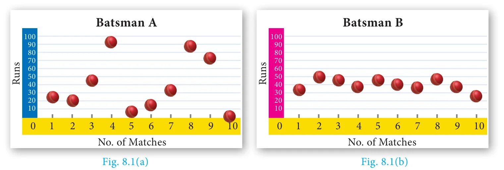
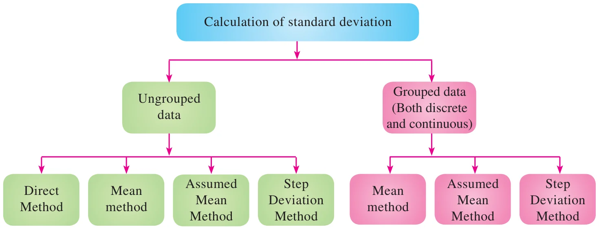

8.2 Measures of Dispersion
The following data provide the runs scored by two batsmen in the last 10 matches.
Batsman A: 25, 20, 45, 93, 8, 14, 32, 87, 72, 4
Batsman B: 33, 50, 47, 38, 45, 40, 36, 48, 37, 26
\(\text{Mean of Batsman A} = \dfrac{25 + 20 + 45 + 93 + 8 + 14 + 32 + 87 + 72 + 4}{10} = 40\)
\(\text{Mean of Batsman B} = \dfrac{33 + 50 + 47 + 38 + 45 + 40 + 36 + 48 + 37 + 26}{10} = 40\)
The mean of both datas are same (40), but they differ significantly.

From the above diagrams, we see that runs of batsman \(B\) are grouped around the mean. But the runs of batsman \(A\) are scattered from 0 to 100, though they both have same mean.
Thus, some additional statistical information may be required to determine how the values are spread in data. For this, we shall discuss Measures of Dispersion.
Dispersion is a measure which gives an idea about the scatteredness of the values.
Measures of Variation (or) Dispersion of a data provide an idea of how observations spread out (or) scattered throughout the data.
Different Measures of Dispersion are
- Range
- Mean deviation
- Quartile deviation
- Standard deviation
- Variance
- Coefficient of Variation
8.2.1 Range
The difference between the largest value and the smallest value is called Range.
\(\text{Range } R = L - S\)
\(\text{Coefficient of range} = \dfrac{L - S}{L + S}\)
where \(L\) - Largest value; \(S\) - Smallest value
Progress Check
The range of first 10 prime numbers is _______
Example 8.1
Find the range and coefficient of range of the following data: 25, 67, 48, 53, 18, 39, 44.
Solution
Largest value \(L = 67\); Smallest value \(S = 18\)
\(\text{Range } R = L - S = 67 - 18 = 49\)
\(\text{Coefficient of range} = \dfrac{L - S}{L + S}\)
\(\text{Coefficient of range} = \dfrac{67 - 18}{67 + 18} = \dfrac{49}{85} = 0.576\)
Example 8.2
Find the range of the following distribution.
| Age (in years) | 16-18 | 18-20 | 20-22 | 22-24 | 24-26 | 26-28 |
|---|---|---|---|---|---|---|
| Number of students | 0 | 4 | 6 | 8 | 2 | 2 |
Solution
\(\text{Here Largest value } L = 28\)
\(\text{Smallest value } S = 18\)
\(\text{Range } R = L - S\)
\(R = 28 - 18 = 10 \text{ Years}\)
Note
If the frequency of initial class is zero, then the next class will be considered for the calculation of range.
Example 8.3
The range of a set of data is 13.67 and the largest value is 70.08. Find the smallest value.
Solution
\(\text{Range } R = 13.67\)
\(\text{Largest value } L = 70.08\)
\(\text{Range } R = L - S\)
\(13.67 = 70.08 - S\)
\(S = 70.08 - 13.67 = 56.41\)
Therefore, the smallest value is 56.41.
Note
The range of a set of data does not give the clear idea about the dispersion of the data from measures of Central Tendency. For this, we need a measure which depend upon the deviation from the measures of Central Tendency.
8.2.2 Deviations from the mean
For a given data with \(n\) observations \(x_1, x_2, \ldots x_n\), the deviations from the mean \(\overline{x}\) are \(x_1 - \overline{x},\ x_2 - \overline{x},\ \ldots,\ x_n - \overline{x}\).
8.2.3 Squares of deviations from the mean
The squares of deviations from the mean \(\overline{x}\) of the observations \(x_1, x_2, \ldots, x_n\) are \((x_1 - \overline{x})^2, (x_2 - \overline{x})^2, \ldots, (x_n - \overline{x})^2\) or \(\displaystyle\sum_{i=1}^{n} (x_i - \overline{x})^2\)
Note
We note that \((x_i - \overline{x})^2 \ge 0\) for all observations \(x_i,\ i = 1, 2, 3, \ldots, n\). If the deviations from the mean \((x_i - \overline{x})\) are small, then the squares of the deviations will be very small.
8.2.4 Variance
The mean of the squares of the deviations from the mean is called Variance. It is denoted by \(\sigma^2\) (read as sigma square).
\[\begin{aligned} \text{Variance} &= \text{Mean of squares of deviations} \\ &= \frac{(x_1 - \overline{x})^2 + (x_2 - \overline{x})^2 + \ldots + (x_n - \overline{x})^2}{n} \\ \text{Variance } \sigma^2 &= \frac{\sum_{i=1}^{n} (x_i - \overline{x})^2}{n} \end{aligned}\]
Thinking Corner
Can variance be negative?
8.2.5 Standard Deviation
The positive square root of Variance is called Standard deviation. That is, standard deviation is the positive square root of the mean of the squares of deviations of the given values from their mean. It is denoted by \(\sigma\).
Standard deviation gives a clear idea about how far the values are spreading or deviating from the mean.
\[\text{Standard deviation } \sigma = \sqrt{\frac{\sum_{i=1}^{n} (x_i - \overline{x})^2}{n}}\]
Do you know?
Karl Pearson was the first person to use the word standard deviation. German mathematician Gauss used the word Mean error.

Calculation of Standard Deviation for ungrouped data
(i) Direct Method
\[\begin{aligned} \text{Standard deviation } \sigma &= \sqrt{\frac{\Sigma (x_i - \overline{x})^2}{n}} \\ &= \sqrt{\frac{\Sigma (x_i^2 - 2x_i\overline{x} + \overline{x}^2)}{n}} \\ &= \sqrt{\frac{\Sigma x_i^2}{n} - 2\overline{x}\frac{\Sigma x_i}{n} + \frac{\overline{x}^2}{n} \times (1 + 1 + \cdots \text{ to } n \text{ times})} \\ &= \sqrt{\frac{\Sigma x_i^2}{n} - 2\overline{x} \times \overline{x} + \frac{\overline{x}^2}{n} \times n} = \sqrt{\frac{\Sigma x_i^2}{n} - 2\overline{x}^2 + \overline{x}^2} = \sqrt{\frac{\Sigma x_i^2}{n} - \overline{x}^2} \end{aligned}\]
\[\text{Standard deviation, } \sigma = \sqrt{\frac{\Sigma x_i^2}{n} - \left(\frac{\Sigma x_i}{n}\right)^2}\]
Note
The standard deviation and mean have same units in which the data are given.
Note
- While computing standard deviation, arranging data in ascending order is not mandatory.
- If the data values are given directly then to find standard deviation we can use the formula \(\sigma = \sqrt{\dfrac{\Sigma x_i^2}{n} - \left(\dfrac{\Sigma x_i}{n}\right)^2}\)
- If the data values are not given directly but the squares of the deviations from the mean of each observation is given then to find standard deviation we can use the formula \(\sigma = \sqrt{\dfrac{\Sigma (x_i - \overline{x})^2}{n}}\).
Example 8.4
The number of televisions sold in each day of a week are 13, 8, 4, 9, 7, 12, 10. Find its standard deviation.
Solution
| \(x_i\) | \(x_i^2\) |
|---|---|
| 13 | 169 |
| 8 | 64 |
| 4 | 16 |
| 9 | 81 |
| 7 | 49 |
| 12 | 144 |
| 10 | 100 |
| \(\Sigma x_i = 63\) | \(\Sigma x_i^2 = 623\) |
Standard deviation
\[\begin{aligned} \sigma &= \sqrt{\frac{\Sigma x_i^2}{n} - \left(\frac{\Sigma x_i}{n}\right)^2} \\ &= \sqrt{\frac{623}{7} - \left(\frac{63}{7}\right)^2} \\ &= \sqrt{89 - 81} = \sqrt{8} \end{aligned}\]
Hence, \(\sigma \simeq 2.83\)
Thinking Corner
Can the standard deviation be more than the variance?
Progress Check
If the variance is 0.49 then the standard deviation is _____.
(ii) Mean method
Another convenient way of finding standard deviation is to use the following formula.
\(\text{Standard deviation (by mean method) } \sigma = \sqrt{\dfrac{\Sigma (x_i - \overline{x})^2}{n}}\)
\(\text{If } d_i = x_i - \overline{x} \text{ are the deviations, then } \sigma = \sqrt{\dfrac{\Sigma d_i^2}{n}}\)
Example 8.5
The amount of rainfall in a particular season for 6 days are given as 17.8 cm, 19.2 cm, 16.3 cm, 12.5 cm, 12.8 cm and 11.4 cm. Find its standard deviation.
Solution
Arranging the numbers in ascending order we get, 11.4, 12.5, 12.8, 16.3, 17.8, 19.2. Number of observations \(n = 6\)
\(\text{Mean} = \dfrac{11.4 + 12.5 + 12.8 + 16.3 + 17.8 + 19.2}{6} = \dfrac{90}{6} = 15\)
| \(x_i\) | \(d_i = x_i - \overline{x}\) \(= x_i - 15\) | \(d_i^2\) |
|---|---|---|
| 11.4 | \(-3.6\) | 12.96 |
| 12.5 | \(-2.5\) | 6.25 |
| 12.8 | \(-2.2\) | 4.84 |
| 16.3 | 1.3 | 1.69 |
| 17.8 | 2.8 | 7.84 |
| 19.2 | 4.2 | 17.64 |
| \(\Sigma d_i^2 = 51.22\) |
\[\begin{aligned} \text{Standard deviation } \sigma &= \sqrt{\frac{\Sigma d_i^2}{n}} \\ &= \sqrt{\frac{51.22}{6}} = \sqrt{8.53} \end{aligned}\]
Hence, \(\sigma \simeq 2.9\)
(iii) Assumed Mean method
When the mean value is not an integer (since calculations are very tedious in decimal form) then it is better to use the assumed mean method to find the standard deviation.
Let \(x_1, x_2, x_3, \ldots, x_n\) be the given data values and let \(\overline{x}\) be their mean.
Let \(d_i\) be the deviation of \(x_i\) from the assumed mean \(A\), which is usually the middle value or near the middle value of the given data.
\[\begin{aligned} d_i &= x_i - A \text{ gives, } x_i = d_i + A && \ldots(1) \\ \Sigma d_i &= \Sigma (x_i - A) \\ &= \Sigma x_i - (A + A + A + \cdots \text{ to } n \text{ times}) \\ \Sigma d_i &= \Sigma x_i - A \times n \\ \frac{\Sigma d_i}{n} &= \frac{\Sigma x_i}{n} - A \\ \overline{d} &= \overline{x} - A \text{ (or) } \overline{x} = \overline{d} + A && \ldots(2) \end{aligned}\]
\[\begin{aligned} \text{Standard deviation } \sigma &= \sqrt{\frac{\Sigma (x_i - \overline{x})^2}{n}} = \sqrt{\frac{\Sigma (d_i + A - \overline{d} - A)^2}{n}} && \text{(using (1) and (2))} \\ &= \sqrt{\frac{\Sigma (d_i - \overline{d})^2}{n}} = \sqrt{\frac{\Sigma (d_i^2 - 2d_i \times \overline{d} + \overline{d}^2)}{n}} \\ &= \sqrt{\frac{\Sigma d_i^2}{n} - 2\overline{d}\frac{\Sigma d_i}{n} + \frac{\overline{d}^2}{n}(1 + 1 + 1 + \cdots \text{ to } n \text{ times})} \\ &= \sqrt{\frac{\Sigma d_i^2}{n} - 2\overline{d} \times \overline{d} + \frac{\overline{d}^2}{n} \times n} && (\text{since } \overline{d} \text{ is a constant}) \\ &= \sqrt{\frac{\Sigma d_i^2}{n} - \overline{d}^2} \end{aligned}\]
\[\text{Standard deviation } \sigma = \sqrt{\frac{\Sigma d_i^2}{n} - \left(\frac{\Sigma d_i}{n}\right)^2}\]
Thinking Corner
For any collection of \(n\) values, can you find the value of
(i) \(\Sigma (x_i - \overline{x})\) (ii) \((\Sigma x_i) - \overline{x}\)
Example 8.6
The marks scored by 10 students in a class test are 25, 29, 30, 33, 35, 37, 38, 40, 44, 48. Find the standard deviation.
Solution
The mean of marks is 35.9 which is not an integer. Hence we take assumed mean, \(A = 35,\ n = 10\).
| \(x_i\) | \(d_i = x_i - A\) \(d_i = x_i - 35\) | \(d_i^2\) |
|---|---|---|
| 25 | \(-10\) | 100 |
| 29 | \(-6\) | 36 |
| 30 | \(-5\) | 25 |
| 33 | \(-2\) | 4 |
| 35 | 0 | 0 |
| 37 | 2 | 4 |
| 38 | 3 | 9 |
| 40 | 5 | 25 |
| 44 | 9 | 81 |
| 48 | 13 | 169 |
| \(\Sigma d_i = 9\) | \(\Sigma d_i^2 = 453\) |
Standard deviation
\[\begin{aligned} \sigma &= \sqrt{\frac{\Sigma d_i^2}{n} - \left(\frac{\Sigma d_i}{n}\right)^2} \\ &= \sqrt{\frac{453}{10} - \left(\frac{9}{10}\right)^2} \\ &= \sqrt{45.3 - 0.81} \\ &= \sqrt{44.49} \\ \sigma &\simeq 6.67 \end{aligned}\]
(iv) Step deviation method
Let \(x_1, x_2, x_3, \ldots x_n\) be the given data. Let A be the assumed mean.
Let \(c\) be the common divisor of \(x_i - A\).
\[\begin{aligned} \text{Let} \quad d_i &= \frac{x_i - A}{c} \\ \text{Then} \quad x_i &= d_i c + A && \ldots(1) \\ \Sigma x_i &= \Sigma (d_i c + A) = c\,\Sigma d_i + A \times n \\ \frac{\Sigma x_i}{n} &= c\frac{\Sigma d_i}{n} + A \\ \overline{x} &= c\overline{d} + A && \ldots(2) \\ x_i - \overline{x} &= cd_i + A - c\overline{d} - A = c(d_i - \overline{d}) && \text{(using (1) and (2))} \\ \sigma &= \sqrt{\frac{\Sigma (x_i - \overline{x})^2}{n}} = \sqrt{\frac{\Sigma (c(d_i - \overline{d}))^2}{n}} = \sqrt{\frac{c^2 \Sigma (d_i - \overline{d})^2}{n}} \\ \sigma &= c \times \sqrt{\frac{\Sigma d_i^2}{n} - \left(\frac{\Sigma d_i}{n}\right)^2} \end{aligned}\]
Note
We can use any of the above methods for finding the standard deviation
Activity 1
Find the standard deviation of the marks obtained by you in all five subjects in the quarterly examination and in the midterm test separately. What do you observe from your results.
Example 8.7
The amount that the children have spent for purchasing some eatables in one day trip of a school are 5, 10, 15, 20, 25, 30, 35, 40. Using step deviation method, find the standard deviation of the amount they have spent.
Solution
We note that all the observations are divisible by 5. Hence we can use the step deviation method. Let the Assumed mean \(A = 20,\ n = 8\).
| \(x_i\) | \(d_i = x_i - A\) \(d_i = x_i - 20\) | \(d_i = \dfrac{x_i - A}{c}\) \(c = 5\) | \(d_i^2\) |
|---|---|---|---|
| 5 | \(-15\) | \(-3\) | 9 |
| 10 | \(-10\) | \(-2\) | 4 |
| 15 | \(-5\) | \(-1\) | 1 |
| 20 | 0 | 0 | 0 |
| 25 | 5 | 1 | 1 |
| 30 | 10 | 2 | 4 |
| 35 | 15 | 3 | 9 |
| 40 | 20 | 4 | 16 |
| \(\Sigma d_i = 4\) | \(\Sigma d_i^2 = 44\) |
Standard deviation
\[\begin{aligned} \sigma &= \sqrt{\frac{\Sigma d_i^2}{n} - \left(\frac{\Sigma d_i}{n}\right)^2} \times c \\ &= \sqrt{\frac{44}{8} - \left(\frac{4}{8}\right)^2} \times 5 = \sqrt{\frac{11}{2} - \frac{1}{4}} \times 5 \\ &= \sqrt{5.5 - 0.25} \times 5 = 2.29 \times 5 \\ \sigma &\simeq 11.45 \end{aligned}\]
Example 8.8
Find the standard deviation of the following data 7, 4, 8, 10, 11. Add 3 to all the values then find the standard deviation for the new values.
Solution
Arranging the values in ascending order we get, 4, 7, 8, 10, 11 and \(n = 5\)
| \(x_i\) | \(x_i^2\) |
|---|---|
| 4 | 16 |
| 7 | 49 |
| 8 | 64 |
| 10 | 100 |
| 11 | 121 |
| \(\Sigma x_i = 40\) | \(\Sigma x_i^2 = 350\) |
Standard deviation
\[\begin{aligned} \sigma &= \sqrt{\frac{\Sigma x_i^2}{n} - \left(\frac{\Sigma x_i}{n}\right)^2} \\ &= \sqrt{\frac{350}{5} - \left(\frac{40}{5}\right)^2} \\ \sigma &= \sqrt{6} \simeq 2.45 \end{aligned}\]
When we add 3 to all the values, we get the new values as 7, 10, 11, 13, 14.
| \(x_i\) | \(x_i^2\) |
|---|---|
| 7 | 49 |
| 10 | 100 |
| 11 | 121 |
| 13 | 169 |
| 14 | 196 |
| \(\Sigma x_i = 55\) | \(\Sigma x_i^2 = 635\) |
Standard deviation
\[\begin{aligned} \sigma &= \sqrt{\frac{\Sigma x_i^2}{n} - \left(\frac{\Sigma x_i}{n}\right)^2} \\ &= \sqrt{\frac{635}{5} - \left(\frac{55}{5}\right)^2} \\ \sigma &= \sqrt{6} \simeq 2.45 \end{aligned}\]
We see that the standard deviation will not change when we add some fixed constant \(k\) to all the values.
Example 8.9
Find the standard deviation of the data 2, 3, 5, 7, 8. Multiply each data by 4. Find the standard deviation of the new values.
Solution
Given, \(n = 5\)
| \(x_i\) | \(x_i^2\) |
|---|---|
| 2 | 4 |
| 3 | 9 |
| 5 | 25 |
| 7 | 49 |
| 8 | 64 |
| \(\Sigma x_i = 25\) | \(\Sigma x_i^2 = 151\) |
\[\begin{aligned} \text{Standard deviation } \sigma &= \sqrt{\frac{\Sigma x_i^2}{n} - \left(\frac{\Sigma x_i}{n}\right)^2} \\ \sigma &= \sqrt{\frac{151}{5} - \left(\frac{25}{5}\right)^2} = \sqrt{30.2 - 25} = \sqrt{5.2} \simeq 2.28 \end{aligned}\]
When we multiply each data by 4, we get the new values as 8, 12, 20, 28, 32.
| \(x_i\) | \(x_i^2\) |
|---|---|
| 8 | 64 |
| 12 | 144 |
| 20 | 400 |
| 28 | 784 |
| 32 | 1024 |
| \(\Sigma x_i = 100\) | \(\Sigma x_i^2 = 2416\) |
\[\begin{aligned} \text{Standard deviation } \sigma &= \sqrt{\frac{\Sigma x_i^2}{n} - \left(\frac{\Sigma x_i}{n}\right)^2} \\ &= \sqrt{\frac{2416}{5} - \left(\frac{100}{5}\right)^2} = \sqrt{483.2 - 400} = \sqrt{83.2} \\ \sigma &= \sqrt{16 \times 5.2} = 4\sqrt{5.2} \simeq 9.12 \end{aligned}\]
We see that when we multiply each data by some fixed constant \(k\) the standard deviation also get multiplied by \(k\).
Example 8.10
Find the mean and variance of the first \(n\) natural numbers.
Solution
\[\begin{aligned} \text{Mean } \overline{x} &= \frac{\text{Sum of all the observations}}{\text{Number of observations}} \\ &= \frac{\Sigma x_i}{n} = \frac{1 + 2 + 3 + \ldots + n}{n} = \frac{n(n+1)}{2 \times n} \\ \text{Mean } \overline{x} &= \frac{n+1}{2} \\ \text{Variance } \sigma^2 &= \frac{\Sigma x_i^2}{n} - \left(\frac{\Sigma x_i}{n}\right)^2 && \left[\begin{aligned} \Sigma x_i^2 &= 1^2 + 2^2 + 3^2 + \ldots + n^2 \\ (\Sigma x_i)^2 &= (1 + 2 + 3 + \ldots + n)^2 \end{aligned}\right] \\ &= \frac{n(n+1)(2n+1)}{6 \times n} - \left[\frac{n(n+1)}{2 \times n}\right]^2 \\ &= \frac{2n^2 + 3n + 1}{6} - \frac{n^2 + 2n + 1}{4} \\ \text{Variance } \sigma^2 &= \frac{4n^2 + 6n + 2 - 3n^2 - 6n - 3}{12} = \frac{n^2 - 1}{12}. \end{aligned}\]
Calculation of Standard deviation for grouped data
(i) Mean method
\[\begin{aligned} \text{Standard deviation } \sigma &= \sqrt{\frac{\Sigma f_i (x_i - \overline{x})^2}{N}} \\ d_i &= x_i - \overline{x} \\ \sigma &= \sqrt{\frac{\Sigma f_i d_i^2}{N}}, \text{ where, } N = \sum_{i=1}^{n} f_i \end{aligned}\]
(\(f_i\) are frequency values of the corresponding data points \(x_i\))
Example 8.11
48 students were asked to write the total number of hours per week they spent on watching television. With this information find the standard deviation of hours spent for watching television.
| \(x\) | 6 | 7 | 8 | 9 | 10 | 11 | 12 |
|---|---|---|---|---|---|---|---|
| \(f\) | 3 | 6 | 9 | 13 | 8 | 5 | 4 |
Solution
| \(x_i\) | \(f_i\) | \(x_i f_i\) | \(d_i = x_i - \overline{x}\) | \(d_i^2\) | \(f_i d_i^2\) |
|---|---|---|---|---|---|
| 6 | 3 | 18 | \(-3\) | 9 | 27 |
| 7 | 6 | 42 | \(-2\) | 4 | 24 |
| 8 | 9 | 72 | \(-1\) | 1 | 9 |
| 9 | 13 | 117 | 0 | 0 | 0 |
| 10 | 8 | 80 | 1 | 1 | 8 |
| 11 | 5 | 55 | 2 | 4 | 20 |
| 12 | 4 | 48 | 3 | 9 | 36 |
| \(N = 48\) | \(\Sigma x_i f_i = 432\) | \(\Sigma d_i = 0\) | \(\Sigma f_i d_i^2 = 124\) |
Mean
\(\overline{x} = \dfrac{\Sigma x_i f_i}{N} = \dfrac{432}{48} = 9 \quad (\because N = \Sigma f_i)\)
Standard deviation
\(\sigma = \sqrt{\dfrac{\Sigma f_i d_i^2}{N}} = \sqrt{\dfrac{124}{48}} = \sqrt{2.58}\)
\(\sigma \simeq 1.6\)
(ii) Assumed Mean method
Let \(x_1, x_2, x_3, \ldots x_n\) be the given data with frequencies \(f_1, f_2, f_3, \ldots f_n\) respectively. Let \(\overline{x}\) be their mean and \(A\) be the assumed mean.
\(d_i = x_i - A\)
\(\text{Standard deviation, } \sigma = \sqrt{\dfrac{\Sigma f_i d_i^2}{N} - \left(\dfrac{\Sigma f_i d_i}{N}\right)^2}\)
Example 8.12
The marks scored by the students in a slip test are given below. Find the standard deviation of their marks.
| \(x\) | 4 | 6 | 8 | 10 | 12 |
|---|---|---|---|---|---|
| \(f\) | 7 | 3 | 5 | 9 | 5 |
Solution
Let the assumed mean, \(A = 8\)
| \(x_i\) | \(f_i\) | \(d_i = x_i - A\) | \(f_i d_i\) | \(f_i d_i^2\) |
|---|---|---|---|---|
| 4 | 7 | \(-4\) | \(-28\) | 112 |
| 6 | 3 | \(-2\) | \(-6\) | 12 |
| 8 | 5 | 0 | 0 | 0 |
| 10 | 9 | 2 | 18 | 36 |
| 12 | 5 | 4 | 20 | 80 |
| \(N = 29\) | \(\Sigma f_i d_i = 4\) | \(\Sigma f_i d_i^2 = 240\) |
Standard deviation
\[\begin{aligned} \sigma &= \sqrt{\frac{\Sigma f_i d_i^2}{N} - \left(\frac{\Sigma f_i d_i}{N}\right)^2} \\ &= \sqrt{\frac{240}{29} - \left(\frac{4}{29}\right)^2} = \sqrt{\frac{240 \times 29 - 16}{29 \times 29}} \\ \sigma &= \sqrt{\frac{6944}{29 \times 29}} \Rightarrow \sigma \simeq 2.87 \end{aligned}\]
Calculation of Standard deviation for continuous frequency distribution
(i) Mean method
\(\text{Standard deviation } \sigma = \sqrt{\dfrac{\Sigma f_i (x_i - \overline{x})^2}{N}}\)
where, \(x_i =\) Middle value of the \(i\)th class.
\(f_i =\) Frequency of the \(i\)th class.
(ii) Shortcut method (or) Step deviation method
To make the calculation simple, we provide the following formula. Let \(A\) be the assumed mean, \(x_i\) be the middle value of the \(i^{\text{th}}\) class and \(c\) is the width of the class interval.
\(d_i = \dfrac{x_i - A}{c}\)
\(\sigma = c \times \sqrt{\dfrac{\Sigma f_i d_i^2}{N} - \left(\dfrac{\Sigma f_i d_i}{N}\right)^2}\)
Example 8.13
Marks of the students in a particular subject of a class are given below. Find its standard deviation.
| Marks | 0-10 | 10-20 | 20-30 | 30-40 | 40-50 | 50-60 | 60-70 |
|---|---|---|---|---|---|---|---|
| Number of students | 8 | 12 | 17 | 14 | 9 | 7 | 4 |
Solution
Let the assumed mean, \(A = 35,\ c = 10\)
| Marks | Mid value \((x_i)\) | \(f_i\) | \(d_i = x_i - A\) | \(d_i = \dfrac{x_i - A}{c}\) | \(f_i d_i\) | \(f_i d_i^2\) |
|---|---|---|---|---|---|---|
| 0-10 | 5 | 8 | \(-30\) | \(-3\) | \(-24\) | 72 |
| 10-20 | 15 | 12 | \(-20\) | \(-2\) | \(-24\) | 48 |
| 20-30 | 25 | 17 | \(-10\) | \(-1\) | \(-17\) | 17 |
| 30-40 | 35 | 14 | 0 | 0 | 0 | 0 |
| 40-50 | 45 | 9 | 10 | 1 | 9 | 9 |
| 50-60 | 55 | 7 | 20 | 2 | 14 | 28 |
| 60-70 | 65 | 4 | 30 | 3 | 12 | 36 |
| \(N = 71\) | \(\Sigma f_i d_i = -30\) | \(\Sigma f_i d_i^2 = 210\) |
\[\begin{aligned} \text{Standard deviation } \sigma &= c \times \sqrt{\frac{\Sigma f_i d_i^2}{N} - \left(\frac{\Sigma f_i d_i}{N}\right)^2} \\ \sigma &= 10 \times \sqrt{\frac{210}{71} - \left(\frac{-30}{71}\right)^2} = 10 \times \sqrt{\frac{210}{71} - \frac{900}{5041}} \\ &= 10 \times \sqrt{2.779}\,; \quad \sigma \simeq 16.67 \end{aligned}\]
Thinking Corner
- The standard deviation of a data is 2.8, if 5 is added to all the data values then the new standard deviation is ___.
- If \(S\) is the standard deviation of values \(p, q, r\) then standard deviation of \(p-3, q-3, r-3\) is ___.
Example 8.14
The mean and standard deviation of 15 observations are found to be 10 and 5 respectively. On rechecking it was found that one of the observation with value 8 was incorrect. Calculate the correct mean and standard deviation if the correct observation value was 23?
Solution
\(n = 15,\ \overline{x} = 10,\ \sigma = 5;\ \overline{x} = \dfrac{\Sigma x}{n};\ \Sigma x = 15 \times 10 = 150\)
\[\begin{aligned} \text{Wrong observation value} &= 8, \text{ Correct observation value} = 23. \\ \text{Correct total} &= 150 - 8 + 23 = 165 \\ \text{Correct mean } \overline{x} &= \frac{165}{15} = 11 \\ \text{Standard deviation } \sigma &= \sqrt{\frac{\Sigma x^2}{n} - \left(\frac{\Sigma x}{n}\right)^2} \\ \text{Incorrect value of } \sigma &= 5 = \sqrt{\frac{\Sigma x^2}{15} - (10)^2} \\ 25 &= \frac{\Sigma x^2}{15} - 100 \Rightarrow \frac{\Sigma x^2}{15} = 125 \\ \text{Incorrect value of } \Sigma x^2 &= 1875 \\ \text{Correct value of } \Sigma x^2 &= 1875 - 8^2 + 23^2 = 2340 \\ \text{Correct standard deviation } \sigma &= \sqrt{\frac{2340}{15} - (11)^2} \\ \sigma &= \sqrt{156 - 121} = \sqrt{35} \qquad \sigma \simeq 5.9 \end{aligned}\]